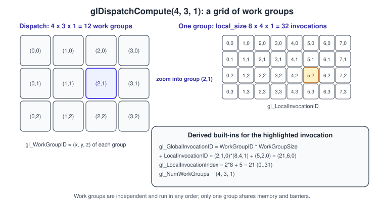
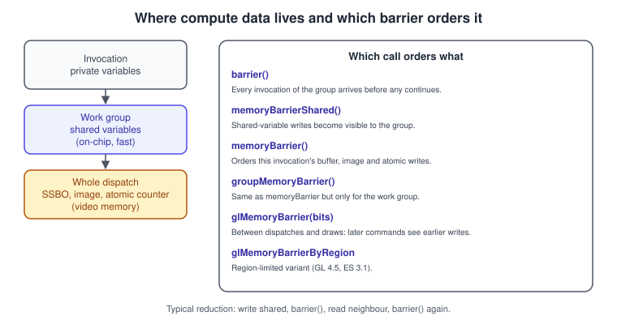
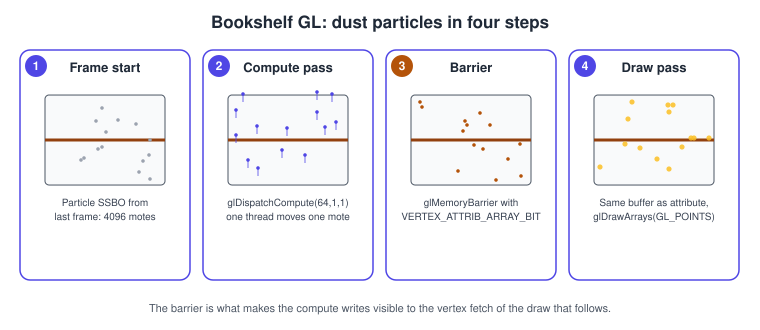

Compute Shaders in OpenGL
|
This content was generated with the assistance of AI and should be verified against the official documentation before being relied on in production. |
A compute shader is a shader stage that is not part of the drawing pipeline: it takes no vertices, produces no fragments and writes to no framebuffer. You launch it with a grid of work groups, every invocation runs the same program, and it reads and writes buffers and images directly. It is the way to run general-purpose work (particles, culling, blurs, prefix sums, skinning) on the GPU without leaving OpenGL.
The facts on this page were checked in November 2026. Compute shaders are core in desktop OpenGL 4.3 (2012), GLSL 4.30 and newer (this guide documents OpenGL 4.6 and GLSL 4.60), and core in OpenGL ES 3.1 (2014), GLSL ES 3.10 and newer (ES 3.2 and GLSL ES 3.20 are the current revisions). The requirements are therefore a 4.3+ context on desktop or an ES 3.1+ context on Android and embedded Linux. macOS stops at OpenGL 4.1 and has no compute shaders in OpenGL at all, and WebGL 2 does not expose them either. The other pipeline stages are described in The OpenGL Rendering Pipeline; the concept in the abstract is covered in Advanced Pipeline Stages and the hardware background in GPU Architecture Basics.
What a compute shader is and why it exists
Before 4.3, the only way to run general computation in OpenGL was to disguise it as drawing: render a full-screen quad into a texture with a fragment shader, or capture vertex-shader output with transform feedback (see Synchronisation, Queries and Transform Feedback). Both need a render target, a rasteriser and a graphics pipeline that the problem does not use. A compute shader removes the disguise:
-
There is no fixed input and no fixed output. The shader decides what to read and write through shader storage buffer objects (SSBOs), images, uniform buffers, textures and atomic counters.
-
The shader works on a grid you choose, not on triangles. Mapping an invocation to a data element is your job, through built-in index variables.
-
Invocations in the same work group can cooperate through fast shared memory and barriers. This is the feature that fragment-shader tricks cannot offer.
Compute shaders are not cheaper than drawing by themselves; they are more flexible. The main performance benefit comes from shared memory and from skipping the rasteriser and the blending hardware.
The execution model: work groups and invocations
A dispatch launches a three-dimensional grid of work groups. Each work group is itself a three-dimensional block of
invocations (threads). The size of one work group is fixed in the shader with local_size_x, local_size_y and
local_size_z (each defaults to 1); the number of groups is chosen on the CPU in glDispatchCompute.

The built-in variables identify where an invocation sits:
| Built-in | Type | Meaning |
|---|---|---|
|
|
The number of groups in the dispatch (the arguments of |
|
|
The local size declared in the shader. |
|
|
The group this invocation belongs to. |
|
|
The invocation’s position inside its group. |
|
|
|
|
|
The flattened local position, used to index shared arrays. |
All groups are independent. The GPU may run them in any order, and nothing in the specification lets one group wait for another inside a single dispatch. Invocations inside one group are guaranteed to be able to synchronise with each other. Hardware executes groups in fixed-size bundles (32 or 64 lanes depending on the vendor, called warps or wavefronts), so group sizes that are multiples of 64 are a safe default; the choice is explained in GPU Architecture Basics.
Choosing the dispatch size
The number of groups is rounded up so the whole data set is covered, and the shader discards the surplus invocations:
const GLuint count = 4096;
const GLuint localSize = 64; // must match local_size_x in the shader
const GLuint groups = (count + localSize - 1) / localSize;
glDispatchCompute(groups, 1, 1);In the shader, if (i >= count) return; protects the partially full last group. A frequent mistake is to forget the
guard and write past the end of a buffer; out-of-range accesses to an SSBO have undefined results.
Limits to query
Every implementation has limits for the dispatch and the work group. The specification guarantees only minimums, so query
the real values with glGetIntegeri_v (per axis) and glGetIntegerv:
| Query | Meaning | Minimum in GL 4.3+ | Minimum in ES 3.1+ |
|---|---|---|---|
|
groups per dispatch axis |
65535 |
65535 |
|
local size per axis |
1024, 1024, 64 |
128, 128, 64 |
|
product of the three local sizes |
1024 |
128 |
|
bytes of |
32768 |
16384 |
The numbers above are the minimum values from the OpenGL 4.6 and OpenGL ES 3.2 specifications; real GPUs usually offer more. A shader that asks for more than the device offers fails to link. On a mobile ES 3.1 device, 128 invocations per group is the largest local size you can rely on; a local size of 64 is safe everywhere.
GLint count[3], size[3], invocations, sharedBytes;
for (GLuint axis = 0; axis < 3; ++axis) {
glGetIntegeri_v(GL_MAX_COMPUTE_WORK_GROUP_COUNT, axis, &count[axis]);
glGetIntegeri_v(GL_MAX_COMPUTE_WORK_GROUP_SIZE, axis, &size[axis]);
}
glGetIntegerv(GL_MAX_COMPUTE_WORK_GROUP_INVOCATIONS, &invocations);
glGetIntegerv(GL_MAX_COMPUTE_SHARED_MEMORY_SIZE, &sharedBytes);
std::printf("groups %d x %d x %d, local size %d x %d x %d, invocations %d, shared %d bytes\n",
count[0], count[1], count[2], size[0], size[1], size[2], invocations, sharedBytes);Source: OpenGL 4 reference: glGet
Creating and launching a compute program
A compute program contains exactly one shader of type GL_COMPUTE_SHADER and no other stage. Creation is the usual
compile, attach, link sequence described in Shaders and Programs;
only the shader type differs. The first line of the source selects the version: #version 430 core on desktop and
#version 310 es on OpenGL ES 3.1 (#version 320 es for 3.2).
GLuint makeComputeProgram(const char* source) {
GLuint shader = glCreateShader(GL_COMPUTE_SHADER);
glShaderSource(shader, 1, &source, nullptr);
glCompileShader(shader);
GLint ok = 0;
glGetShaderiv(shader, GL_COMPILE_STATUS, &ok);
if (!ok) {
char log[2048];
glGetShaderInfoLog(shader, sizeof log, nullptr, log);
std::fprintf(stderr, "compute shader: %s\n", log);
std::exit(1);
}
GLuint program = glCreateProgram();
glAttachShader(program, shader);
glLinkProgram(program);
glGetProgramiv(program, GL_LINK_STATUS, &ok);
if (!ok) {
char log[2048];
glGetProgramInfoLog(program, sizeof log, nullptr, log);
std::fprintf(stderr, "compute link: %s\n", log);
std::exit(1);
}
glDeleteShader(shader);
return program;
}glDispatchCompute(x, y, z) uses the current program. glDispatchComputeIndirect(offset) reads three unsigned integers
(num_groups_x, num_groups_y, num_groups_z) from the buffer bound to GL_DISPATCH_INDIRECT_BUFFER at the given
byte offset, so the GPU can decide how much work to launch (for example after a culling pass wrote a count).
struct DispatchIndirectCommand { GLuint x, y, z; };
GLuint indirect;
glCreateBuffers(1, &indirect); // 4.5; use glGenBuffers + glBindBuffer on older contexts
DispatchIndirectCommand cmd{64, 1, 1};
glNamedBufferStorage(indirect, sizeof cmd, &cmd, GL_DYNAMIC_STORAGE_BIT);
glBindBuffer(GL_DISPATCH_INDIRECT_BUFFER, indirect);
glDispatchComputeIndirect(0);Reading and writing data
A compute shader has no vertex attributes or colour outputs, so it uses the generic resource types. Most of them are explained elsewhere; here is how they fit compute.
Shader storage buffers
An SSBO is a large read-write buffer with a layout declared in the shader. With std430 the layout is tightly packed, so
an array of vec4 structures needs no padding. The binding point is selected with layout(binding = n) and matches
glBindBufferBase(GL_SHADER_STORAGE_BUFFER, n, buffer). Layout rules and the difference with uniform blocks are on
Uniforms, UBOs and SSBOs. An unsized array at the end of a block
can be measured with .length().
Images: load and store
An image unit lets a shader read and write individual texels with imageLoad and imageStore, with no filtering and no
sampler. You bind a level of a texture to a unit with glBindImageTexture and declare the matching uniform with a format
qualifier. The texture must have immutable storage or at least a complete level; see
Textures and Samplers.
glBindImageTexture(0, // image unit
texture,
0, // mip level
GL_FALSE, 0, // not layered, layer 0
GL_READ_WRITE, // access: GL_READ_ONLY, GL_WRITE_ONLY or GL_READ_WRITE
GL_RGBA8); // format, must be compatible with the shader's layout qualifierA small compute shader that darkens the corners of an image (a vignette on the rendered Bookshelf frame):
#version 430 core
layout(local_size_x = 16, local_size_y = 16) in;
layout(rgba8, binding = 0) uniform image2D uImage;
void main() {
ivec2 p = ivec2(gl_GlobalInvocationID.xy);
ivec2 size = imageSize(uImage);
if (p.x >= size.x || p.y >= size.y) return; // partially filled edge groups
vec2 uv = (vec2(p) + 0.5) / vec2(size) * 2.0 - 1.0;
float vignette = 1.0 - 0.35 * dot(uv, uv); // 1 at the centre, darker in the corners
vec4 colour = imageLoad(uImage, p);
imageStore(uImage, p, vec4(colour.rgb * vignette, colour.a));
}Source: OpenGL Wiki: Image Load Store
Notes on images in compute:
-
The qualifier (
rgba8,rgba16f,r32f,r32ui…) must be compatible with the format passed toglBindImageTexture. Only a restricted list of formats is allowed for image variables. -
Reading and writing the same image in one dispatch is only well defined for the same texel by the same invocation, unless you use
coherentand the right barriers. The default is to treat each invocation as owning its texels. -
The ES 3.1 guarantee for read-write images is narrower than on desktop: ES requires
r32f,r32iandr32uiforGL_READ_WRITE; other formats can be write-only or read-only. Use those three formats for portable ping-pong passes. -
For sampling with filtering, bind the same texture as a normal texture on a texture unit in a later draw.
Atomic counters and atomic operations
SSBO and shared variables support atomicAdd, atomicMin, atomicMax, atomicExchange and atomicCompSwap on uint
and int. They are the building block of histograms and of "append" buffers where many invocations claim a slot with one
atomicAdd on a counter. Heavy contention on one address serialises the invocations, so aggregate in shared memory first
and add the group’s total once.
Shared memory and barriers
Variables declared with shared live in on-chip memory visible to all invocations of one work group. They are the reason
to use compute: loading a tile of data once into shared memory and reading it many times cuts memory traffic.
#version 430 core
layout(local_size_x = 64) in;
layout(std430, binding = 0) readonly buffer In { float values[]; };
layout(std430, binding = 1) writeonly buffer Out { float groupSums[]; };
shared float tile[64];
void main() {
uint i = gl_LocalInvocationIndex;
uint g = gl_GlobalInvocationID.x;
tile[i] = g < values.length() ? values[g] : 0.0;
barrier(); // all writes to tile[] are done before any read
for (uint stride = 32u; stride > 0u; stride >>= 1u) {
if (i < stride) tile[i] += tile[i + stride];
barrier(); // finish one reduction step before starting the next
}
if (i == 0u) groupSums[gl_WorkGroupID.x] = tile[0];
}Source: OpenGL Wiki: Compute Shader

Two different things are called a barrier, and mixing them up is the most common compute bug:
-
barrier()in GLSL synchronises the execution of the invocations in one work group. It must be reached by every invocation of the group in uniform control flow: calling it inside anifthat only some invocations take is undefined behaviour. -
Memory barriers (
memoryBarrierShared(),memoryBarrierBuffer(),memoryBarrierImage(),groupMemoryBarrier(),memoryBarrier()) order the visibility of writes. When you depend on another invocation seeing a write, pairbarrier()with the matching memory barrier (for examplememoryBarrierShared()forsharedvariables) to stay on the safe side.
Making results visible to the next command
Writes by a shader to an SSBO or image are not automatically visible to later commands that read them through another
path (a vertex fetch, a uniform buffer read, a texture sample, a buffer upload). The CPU-side
glMemoryBarrier(bits) call inserts that ordering. Choose the bit for the consumer of the data:
| Bit | Use it before |
|---|---|
|
a draw that fetches the written buffer as a vertex attribute |
|
a draw that uses the written buffer as indices |
|
a draw or dispatch whose indirect arguments the shader wrote |
|
a draw or dispatch reading the buffer as a uniform block |
|
a draw that samples a texture the compute shader wrote with |
|
another shader reading or writing the same image with |
|
another shader reading or writing the same buffer through an SSBO |
|
CPU-side reads, |
|
everything above, for debugging; avoid in production |
Two dispatches that touch the same buffer need GL_SHADER_STORAGE_BARRIER_BIT between them; without it the second dispatch
may see stale data on some GPUs and not on others, a classic "works on my machine" defect.
glMemoryBarrierByRegion (OpenGL 4.5 and ES 3.1) limits the ordering to the same framebuffer region and accepts only a
subset of the bits. Older tutorials for ES 3.0 and earlier have no equivalent because those versions had no compute shaders and
no shader-visible writes.
Bookshelf GL: GPU dust particles
The next step of the Bookshelf scene adds a cloud of dust motes drifting in the lamp’s light. Each mote is two vec4
values (position and life, velocity), stored in a single SSBO that the compute pass updates and the draw pass renders
as points. The same buffer plays two roles, so a memory barrier separates them.

The whole program below is complete (C++20, GLFW, glad2). It needs an OpenGL 4.3+ context, so the desktop context hints ask for 4.3 core instead of the 4.1 baseline used on other pages. On macOS, run the update on the CPU or port it to Metal; see Porting to Vulkan, Metal and WebGPU.
// dust.cpp - build: link glfw and a glad2 "gl:core=4.3" loader generated at https://gen.glad.sh/
#include <glad/gl.h>
#include <GLFW/glfw3.h>
#include <cmath>
#include <cstdio>
#include <cstdlib>
#include <initializer_list>
#include <random>
#include <vector>
static const char* kUpdateSrc = R"GLSL(
#version 430 core
layout(local_size_x = 64) in;
struct Mote { vec4 posLife; vec4 vel; }; // 2 x vec4 = 32 bytes, no padding in std430
layout(std430, binding = 0) buffer Motes { Mote motes[]; };
layout(location = 0) uniform float uDt;
layout(location = 1) uniform float uTime;
float hash(uint n) { // small integer hash, result in [0,1)
n = (n << 13u) ^ n;
n = n * (n * n * 15731u + 789221u) + 1376312589u;
return float(n & 0x7fffffffu) / float(0x7fffffffu);
}
void main() {
uint i = gl_GlobalInvocationID.x;
if (i >= uint(motes.length())) return;
Mote m = motes[i];
// gentle swirl plus a slow rise
vec2 swirl = vec2(sin(uTime * 0.7 + m.posLife.y * 3.0), cos(uTime * 0.5 + m.posLife.x * 3.0));
m.vel.xy = mix(m.vel.xy, swirl * 0.05, 0.02);
m.vel.y += 0.01 * uDt;
m.posLife.xy += m.vel.xy * uDt;
m.posLife.w -= uDt * 0.1; // life runs down
if (m.posLife.w <= 0.0 || abs(m.posLife.x) > 1.0 || abs(m.posLife.y) > 1.0) {
// respawn at a pseudo-random place
m.posLife.xy = vec2(hash(i * 2u + uint(uTime * 60.0)), hash(i * 2u + 1u + uint(uTime * 60.0))) * 2.0 - 1.0;
m.posLife.w = 0.5 + 0.5 * hash(i + 77u);
m.vel = vec4(0.0);
}
motes[i] = m;
}
)GLSL";
static const char* kVertSrc = R"GLSL(
#version 430 core
layout(location = 0) in vec4 aPosLife;
out float vLife;
void main() {
vLife = clamp(aPosLife.w, 0.0, 1.0);
gl_Position = vec4(aPosLife.xy, 0.0, 1.0);
gl_PointSize = 2.0 + 3.0 * vLife;
}
)GLSL";
static const char* kFragSrc = R"GLSL(
#version 430 core
in float vLife;
out vec4 fragColor;
void main() {
float d = length(gl_PointCoord - 0.5) * 2.0; // round soft mote
float a = smoothstep(1.0, 0.2, d) * vLife * 0.8;
fragColor = vec4(1.0, 0.92, 0.7, a);
}
)GLSL";
static GLuint compile(GLenum type, const char* src) {
GLuint s = glCreateShader(type);
glShaderSource(s, 1, &src, nullptr);
glCompileShader(s);
GLint ok = 0;
glGetShaderiv(s, GL_COMPILE_STATUS, &ok);
if (!ok) { char log[2048]; glGetShaderInfoLog(s, sizeof log, nullptr, log); std::fprintf(stderr, "%s\n", log); std::exit(1); }
return s;
}
static GLuint link(std::initializer_list<GLuint> shaders) {
GLuint p = glCreateProgram();
for (GLuint s : shaders) glAttachShader(p, s);
glLinkProgram(p);
GLint ok = 0;
glGetProgramiv(p, GL_LINK_STATUS, &ok);
if (!ok) { char log[2048]; glGetProgramInfoLog(p, sizeof log, nullptr, log); std::fprintf(stderr, "%s\n", log); std::exit(1); }
for (GLuint s : shaders) glDeleteShader(s);
return p;
}
int main() {
if (!glfwInit()) return 1;
glfwWindowHint(GLFW_CONTEXT_VERSION_MAJOR, 4);
glfwWindowHint(GLFW_CONTEXT_VERSION_MINOR, 3);
glfwWindowHint(GLFW_OPENGL_PROFILE, GLFW_OPENGL_CORE_PROFILE);
GLFWwindow* window = glfwCreateWindow(800, 600, "Bookshelf GL - dust", nullptr, nullptr);
if (!window) { glfwTerminate(); return 1; }
glfwMakeContextCurrent(window);
glfwSwapInterval(1);
if (!gladLoadGL(glfwGetProcAddress)) return 1;
constexpr GLuint kMotes = 4096, kLocal = 64;
std::mt19937 rng(249);
std::uniform_real_distribution<float> uni(-1.0f, 1.0f);
std::vector<float> data; // x, y, z(unused), life, vx, vy, vz, vw
data.reserve(kMotes * 8);
for (GLuint i = 0; i < kMotes; ++i) {
data.insert(data.end(), {uni(rng), uni(rng), 0.0f, 0.5f + 0.5f * std::abs(uni(rng)), 0.0f, 0.0f, 0.0f, 0.0f});
}
GLuint motes = 0;
glGenBuffers(1, &motes);
glBindBuffer(GL_SHADER_STORAGE_BUFFER, motes);
glBufferData(GL_SHADER_STORAGE_BUFFER, data.size() * sizeof(float), data.data(), GL_DYNAMIC_DRAW);
glBindBufferBase(GL_SHADER_STORAGE_BUFFER, 0, motes);
GLuint vao = 0; // the same buffer, read as a vertex attribute
glGenVertexArrays(1, &vao);
glBindVertexArray(vao);
glBindBuffer(GL_ARRAY_BUFFER, motes);
glEnableVertexAttribArray(0);
glVertexAttribPointer(0, 4, GL_FLOAT, GL_FALSE, 32, nullptr); // stride 32: one Mote
GLuint update = link({compile(GL_COMPUTE_SHADER, kUpdateSrc)});
GLuint draw = link({compile(GL_VERTEX_SHADER, kVertSrc), compile(GL_FRAGMENT_SHADER, kFragSrc)});
glEnable(GL_PROGRAM_POINT_SIZE);
glEnable(GL_BLEND);
glBlendFunc(GL_SRC_ALPHA, GL_ONE); // additive glow
double last = glfwGetTime();
while (!glfwWindowShouldClose(window)) {
double now = glfwGetTime();
float dt = float(now - last);
last = now;
glUseProgram(update);
glUniform1f(0, dt);
glUniform1f(1, float(now));
glDispatchCompute((kMotes + kLocal - 1) / kLocal, 1, 1);
glMemoryBarrier(GL_VERTEX_ATTRIB_ARRAY_BARRIER_BIT); // compute writes -> vertex fetch
int w, h;
glfwGetFramebufferSize(window, &w, &h);
glViewport(0, 0, w, h);
glClearColor(0.05f, 0.05f, 0.08f, 1.0f);
glClear(GL_COLOR_BUFFER_BIT);
glUseProgram(draw);
glBindVertexArray(vao);
glDrawArrays(GL_POINTS, 0, kMotes);
glfwSwapBuffers(window);
glfwPollEvents();
}
glfwTerminate();
return 0;
}Why it is written this way:
-
Moteis twovec4values. Withstd430the array stride is 32 bytes, which equals the32passed toglVertexAttribPointer. Usingvec3members would make the layout 16-byte aligned and break the match; the layout rules are in Uniforms, UBOs and SSBOs. -
The compute shader uses explicit uniform locations (
layout(location = n) uniform), which are core since GL 4.3. They are also available in ES 3.1. -
The barrier between the dispatch and the draw is the point of the example. Remove it and the particles may flicker or freeze on some drivers.
-
An ES 3.1 port changes the first line to
#version 310 es, addsprecision highp float;to the shaders, and loads functions through EGL (see OpenGL ES on Android).GL_PROGRAM_POINT_SIZEdoes not exist in ES; there the vertex shader’sgl_PointSizeis always used.
Frame timing and the particle count
Compute work and draw work share the GPU, so the cost of the dust pass shows up in the frame time. Measure it with a timer query, described in Synchronisation, Queries and Transform Feedback. For 4096 motes the update is negligible; at several million particles the cost is dominated by memory bandwidth.
Common mistakes and performance notes
-
Forgetting the guard for the last partial group, which writes beyond the buffer.
-
Calling
barrier()in divergent control flow. Move it out of anyifthat depends on the invocation id. -
Missing
glMemoryBarrierbetween a dispatch and its consumer, or between two dispatches on the same buffer. -
Wrong
std430assumptions. Avec3member is aligned to 16 bytes, so a C++ struct of three floats does not match the shader’s layout; usevec4members or explicit padding and check the offsets. -
Reading back with
glGetBufferSubDataevery frame. It stalls the pipeline. Keep results on the GPU, or use fences (see the synchronisation page) to read them a frame or two later. -
Choosing a local size with no thought. A size that is not a multiple of the hardware bundle wastes lanes; a size at the maximum can limit occupancy because each group reserves registers and shared memory. Start with 64 for 1D work and 8 x 8 or 16 x 16 for images, then measure.
-
Using compute where a fragment shader is better. Post-processing a render target that is already bound as a framebuffer is often as fast as a compute pass, and works on macOS. Compute is the right tool when you need shared memory, scattered writes or work that is not a screen-aligned image.
-
Image formats. Prefer 32-bit formats (
r32f,rgba16f) for compute images, and keep the sRGB conversion for the final sampled pass; image units do not apply sRGB conversion.
What changed recently
-
Compute shaders arrived in OpenGL 4.3 (August 2012) and OpenGL ES 3.1 (March 2014). No later version changed them materially: OpenGL 4.6 (July 2017, revision May 2022) added
GL_ARB_gl_spirvso compute shaders can come from SPIR-V, and OpenGL ES 3.2 (2015) added the geometry and tessellation stages beside them. -
Books that predate 2012 (the OpenGL SuperBible 4th edition, for example) and ES 2.0-era books know no compute shaders; they emulate GPGPU with transform feedback or render-to-texture. The OpenGL ES 3.0 Programming Guide has a particle system based on transform feedback, which today is usually better written as a compute pass over an SSBO.
-
The compute stage is the same hardware path Vulkan and Metal expose, so the model in this page maps almost 1:1 to both; the mapping is in Porting to Vulkan, Metal and WebGPU.